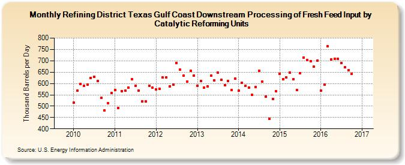

|
Download Data (XLS File) |
|
||||||||
|  | ||||||||
| Refining District Texas Gulf Coast Downstream Processing of Fresh Feed Input by Catalytic Reforming Units (Thousand Barrels per Day) | ||||||||
| Year | Jan | Feb | Mar | Apr | May | Jun | Jul | Aug | Sep | Oct | Nov | Dec |
|---|---|---|---|---|---|---|---|---|---|---|---|---|
| 2010 | 516 | 568 | 598 | 590 | 595 | 625 | 629 | 611 | 536 | 480 | 514 | 557 |
| 2011 | 572 | 492 | 567 | 568 | 582 | 620 | 590 | 569 | 521 | 520 | 591 | 582 |
| 2012 | 575 | 577 | 626 | 627 | 588 | 596 | 691 | 660 | 635 | 608 | 657 | 635 |
| 2013 | 591 | 611 | 581 | 587 | 634 | 613 | 648 | 617 | 593 | 612 | 570 | 621 |
| 2014 | 568 | 603 | 589 | 583 | 549 | 584 | 657 | 607 | 543 | 443 | 532 | 565 |
| 2015 | 643 | 619 | 626 | 648 | 618 | 571 | 646 | 715 | 703 | 699 | 673 | 701 |
| 2016 | 569 | 594 | 763 | 705 | 709 | 708 | 689 | 671 | 658 | 643 | 627 | |
| - = No Data Reported; -- = Not Applicable; NA = Not Available; W = Withheld to avoid disclosure of individual company data. |
| Release Date: 1/31/2017 |
| Next Release Date: 2/28/2017 |